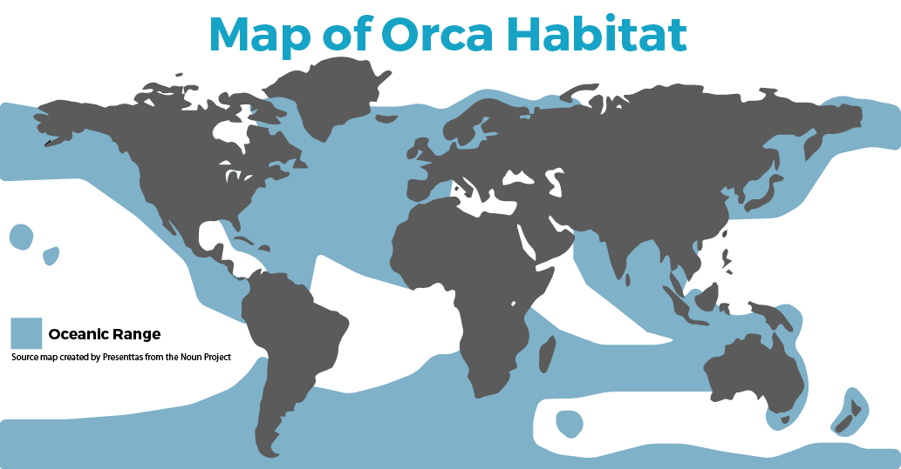

|
Orca whales are one of the most widely distributed marine mammals, found in every ocean across the globe. Unlike many species that have specific habitat requirements, orcas are highly adaptable and thrive in a variety of marine environments, from the frigid Arctic and Antarctic waters to the warm, tropical seas near the equator.
Their ability to live in diverse conditions is a testament to their intelligence, resourcefulness, and complex social structures. Orcas have an extensive range that covers both coastal and open ocean environments. They can be found in all the world’s major oceans, including the Atlantic, Pacific, Indian, and Southern Oceans. However, they tend to be more abundant in nutrient-rich waters where food sources are plentiful. Some of the most well-documented populations exist off the coasts of North America, particularly in the Pacific Northwest near Washington, British Columbia, and Alaska. Other significant populations are found around Norway, Iceland, New Zealand, and the Antarctic Peninsula. Despite their global presence, different populations of orcas have adapted to specific habitats, forming ecotypes with unique behaviors and dietary preferences. These ecotypes often have distinct vocal dialects, hunting techniques, and social structures, making them almost like separate subcultures within the species. |
 |
Orcas in the polar regions are some of the most resilient and specialized members of the species. They navigate freezing waters, sometimes even breaking through thin layers of ice to surface. These orcas rely on prey such as seals, penguins, and even large baleen whales. Some pods in Antarctica are known to use coordinated wave-washing techniques to knock seals off ice floes, demonstrating their problem-solving abilities in extreme environments. In areas like the North Pacific, North Atlantic, and parts of the Southern Hemisphere, orcas inhabit cooler, temperate waters with abundant marine life. The resident orcas of the Pacific Northwest are perhaps the most famous, known for their dependence on Chinook salmon as their primary food source. In contrast, transient orcas in the same region specialize in hunting marine mammals like seals, sea lions, and even other whales. Though less common, orcas are also found in tropical and subtropical waters, including the Gulf of Mexico, the Caribbean, and parts of the Indian Ocean. However, these populations tend to be smaller and more dispersed, as food availability is often less predictable. Tropical orcas tend to have a broader diet, feeding on a mix of fish, squid, and occasional marine mammals.
Orcas are highly versatile when it comes to ocean depth. While they are often observed in shallow coastal waters, especially near fjords and continental shelves, they are also capable of diving deep into the open ocean. Some offshore orcas have been recorded diving to depths of over 300 meters (1,000 feet) in search of prey. Unlike many other whale species, orcas do not follow long, predictable migration routes. Instead, their movements are largely dictated by food availability. Some populations, like the salmon-eating resident orcas of the Pacific Northwest, remain within the same region year-round. Others, such as transient orcas that hunt marine mammals, may travel long distances in search of food. Offshore orcas, which are still poorly understood, are believed to have the most extensive ranges, covering thousands of miles over the course of their lifetimes.